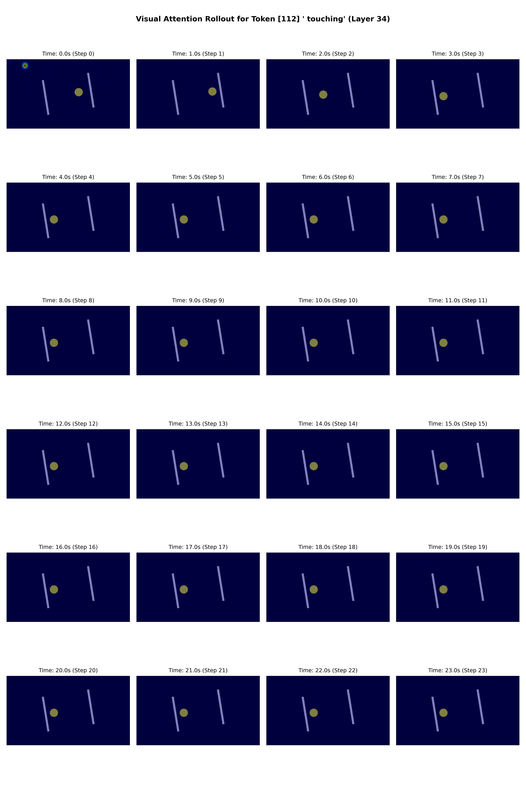

Qwen3-VL Analysis
Perception stability vs. counting limits: a visual study of internal representation layers.
| Domain | Evaluation Video File | Train Accuracy | Test Accuracy | F1-Score |
|---|---|---|---|---|
| Blinking | sweep_count_blinks_c6_f0.5_s9_d24.0_count_blinks.mp4 |
96.10% | 65.00% | 0.58 (Weighted) |
| Bounce Ball | sweep_count_bounces_c6_f0.5_s9_d24.0_count_bounces.mp4 |
100.00% | 58.00% | 0.59 (Weighted) |
| State Transitions | sweep_total_transitions_c6_f0.5_s9_d24.0_total_transitions_s74212.mp4 |
95.76% | 51.61% | 0.51 (Weighted) |
Blinking Dot Domain Probe (sweep_count_blinks_c6_f0.5)

Bounce Ball Domain Probe (sweep_count_bounces_c6_f0.5)

State Transitions Domain Probe (sweep_total_transitions_c6_f0.5)

hl of the final query token at each decoder layer l in [0, 36].
lm_head), which acts as a linear layer of shape (4096, 151936) that projects the 4096-dimensional hidden vector to logits over the vocabulary tokens.
'1', '2', '3', '4', '5') to map the token probability emergence at each layer.
Cohort A (Low Count, GT = 2)

Cohort B (High Count, GT = 5)

Cohort A (Low Count, GT = 2)

Cohort B (High Count, GT = 5)

Cohort A (Low Count, GT = 2)

Cohort B (High Count, GT = 5)

-2) and Layer 35 (final, index -1) to trace how the queries map back to the visual cache.
The 2D heatmap plots below show the temporal attention allocation across the video steps (X-axis, mapping to seconds) for each generated token (Y-axis) during forced decoding on the 2-bounce video. Note the stark difference between the final layer (where attention is heavily compressed) and the second-to-last layer.
Layer 34 (Second-to-Last, index -2)

Layer 35 (Final Projection, index -1)

Click on the buttons below to see the framewise visual attention maps overlayed on the video frames for key generated tokens in the Chain-of-Thought (CoT) reasoning sequence. Notice how attention is almost uniform or heavily concentrated on the initial frame sink, and does not dynamically track the ball's movement as the model decodes the tokens.
